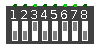

| Library: | Input/Output |
| Introduced: | 3.x.x |
| Appearance: |  |
Outputs a set of zeros or one, as defined by the user-controlled switches.
A DIP Switch has as multiple output pins, as determined by the 'Number of Switch' attribute.
When the component is selected or being added,
Alt-0 through Alt-9 alter its Number of Switch
attribute,
and the arrow keys alter its Facing
attribute,
Pressing the mouse button will toggle one of the switches from 0 to 1 or vice versa.
Supports VHDL and Verilog synthesis.